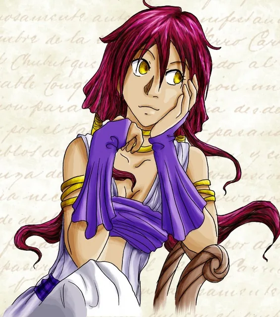
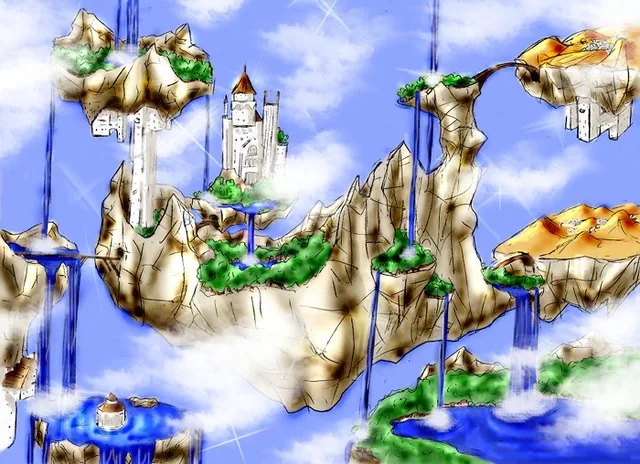
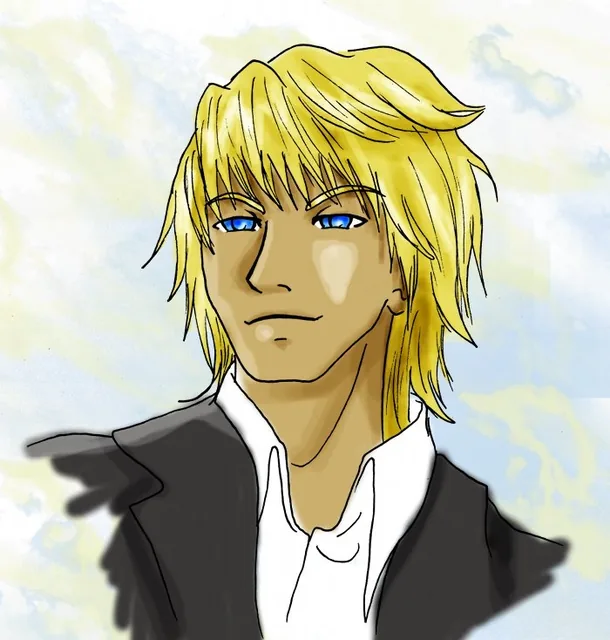
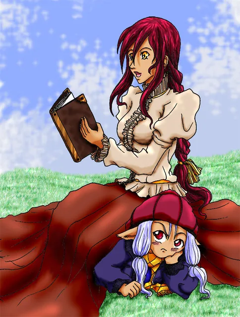

Les Contes d’Aelysse, tome 1
L’histoire principale d’Aelysse et de ses amis dans le monde d’Elenda.
Le manga de Sandrine · Haudryane
Suivez Aelysse dans Elenda, là où les histoires prennent vie. Un manga de fantasy imaginé et dessiné par Sandrine.
Lecture gratuite · Manga, dessins et peintures

L’histoire principale, sa suite, un hors-série et quelques clins d’œil aux personnages.
L’histoire principale d’Aelysse et de ses amis dans le monde d’Elenda.

Les premières planches de la suite de l’aventure.

Une courte histoire pour découvrir les grandes lignes de cet univers.

Trois clins d’œil humoristiques aux personnages des Contes d’Aelysse.
Personnages, lieux et peuples : quelques repères pour explorer le monde d’Aelysse.

Aelysse, Wambas, Andarane, Elia et Kergass.

Le Monde Réel, Elenda et la Via Esperita.

Humains, Elendais, Sang-mêlés, Vampdragons et Nelfes.
Des personnages miniatures aux peintures, découvrez une autre facette de ses créations.

Illustrations et recherches autour des personnages de la série.

Personnages miniatures et dessins au format chibi.

Paysages et scènes peints par Sandrine.